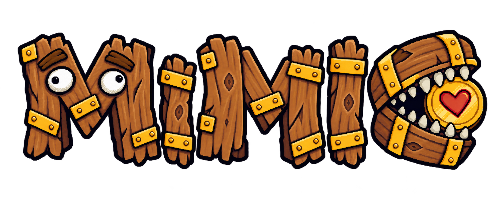
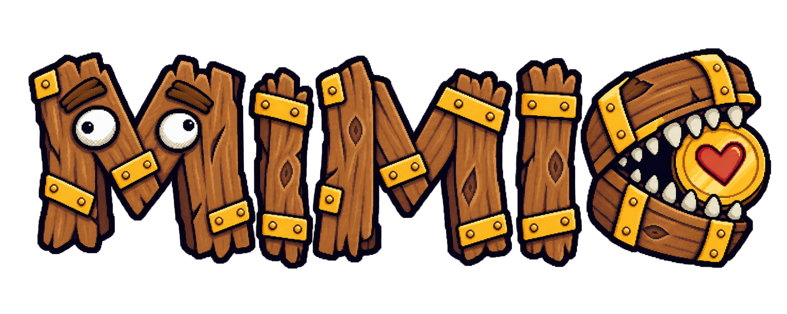
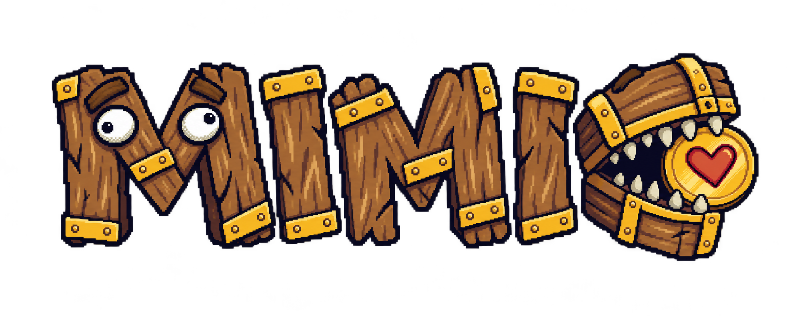
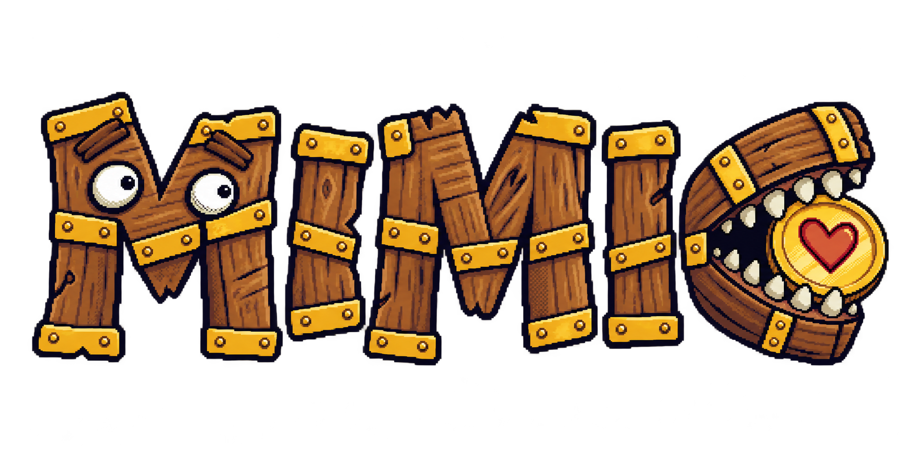
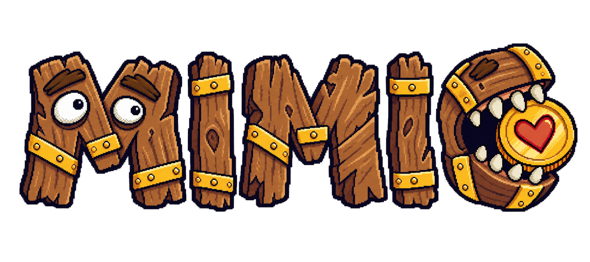
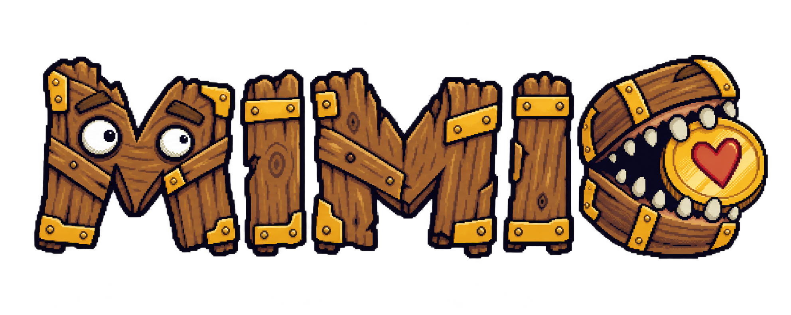
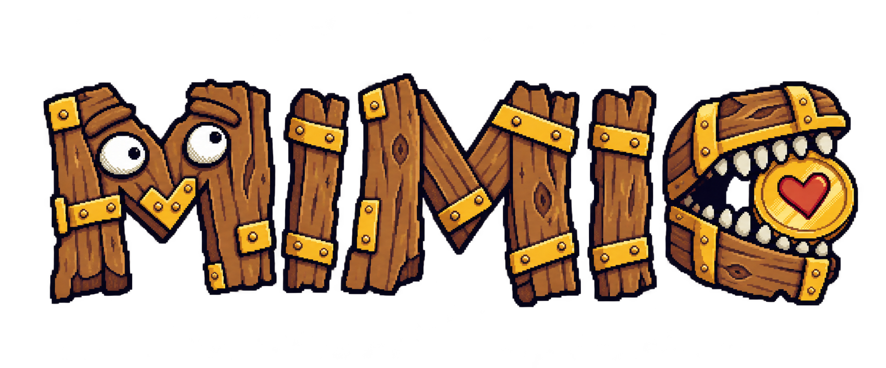

Wordmark 合成候選 v02
依照本輪選擇進行單一方向合成：
- 版本 1 的兩眼、瞳孔方向與眼球比例
- 版本 3 的字面高低差及功能性金屬件
- 版本 5 的厚實木片眉毛
- 版本 7 的寶箱上下顎、牙齒與愛心金幣咬合
- 版本 9 的字級、傾斜、板形差異及拼湊節奏
Review-only：尚未取代 calibration，未加入 manifest、runtime 或產品頁。

我自己的逐項比對
| 指定來源 | 要保留的特徵 | v01 判定 | v02 判定 |
|---|---|---|---|
| 版本 1 | 眼球比例與分離視線 | 保留 | 保留 |
| 版本 3 | 高低差與功能性金屬 | 高低差偏保守 | 已加強：兩個 I 高度與傾斜不同 |
| 版本 5 | 厚木片眉毛 | 保留 | 保留 |
| 版本 7 | C 的上下顎、牙齒與金幣咬合 | 保留 | 保留 |
| 版本 9 | 字級、傾斜、板形與拼湊感 | 中段過於整齊 | 已修正：I／M 寬高、傾斜及接板差異增加 |
修正前 v01

五張實際參考圖
版本 1 · 眼睛

版本 3 · 高低差與金屬

版本 5 · 眉毛

版本 7 · 寶箱金幣

版本 9 · 字級、傾斜、板形與拼湊感
